자율주행자동차란?
자율주행자동차란 운전자의 조작 없이 자동차 스스로 운행이 가능한 자동차
1.컴퓨터(ECU) :
Electronic Control Unit의 약자로 전자신호를 받아 현재 자동차의 특이사항을 파악하여 '문제가 있는지 확인하는 역할을 수행하며,이를 통하여 엔진과 변속기 등의 모든 기기적 제어를 하는 장치
2. 프로그래밍 :
특정 목적을 달성하기 위해 설계된 알고리즘을 프로그래밍 언어를 사용하여 구체적인 프로그램으로 작성하는 과정. 센서와 카메라를 통해 수집한 정보를 이용하여 주행 경로를 탐색하고 목적지까지 경로 계획을 세운다.
3. 센서
자동차의 위치, 주변환경•사물, 보행자의 행동 등을 파악하여 그 정보를 'ECU → 대응 부품(핸들, 가속/감속페달)' 순으로 전달함. 운전자의 감지능력을 대신하는 중요 부품.
센서의 종류
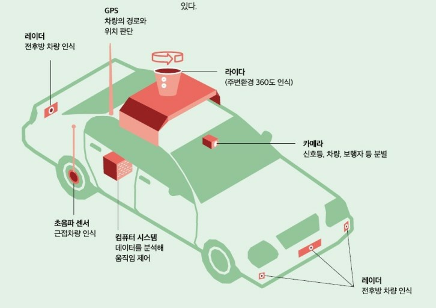1)카메라: 대상물의 화상 데이터 취득. 자동차와 보행자, 주변 사물등을 구별. 차선, 표지판, 노면 상태 파악한다.
2)레이더: 대상물의 속도•거리•방향 데이터 취득. 대상물의 다음 행동을 예측할 때, 위 데이터를 이용하여 대응 방법과 우선순위를 정하는데 도움을 준다.
3)라이다 센서 (펄스 레이더) : 빛을 이용하여 대상물과의 거리 측정. 레이더 역할을 수행한다. 3D지도 제작에 이용된다. 레이더에 비해 저가, 비가 왔을때의 데이터 수집이 어렵다.
4)GPS: 자동차의 현 위치데이터 취득. 위 센서들의 데이터와 함께 운행의 정확도를 높인다.
활용분야
1. 방위 산업
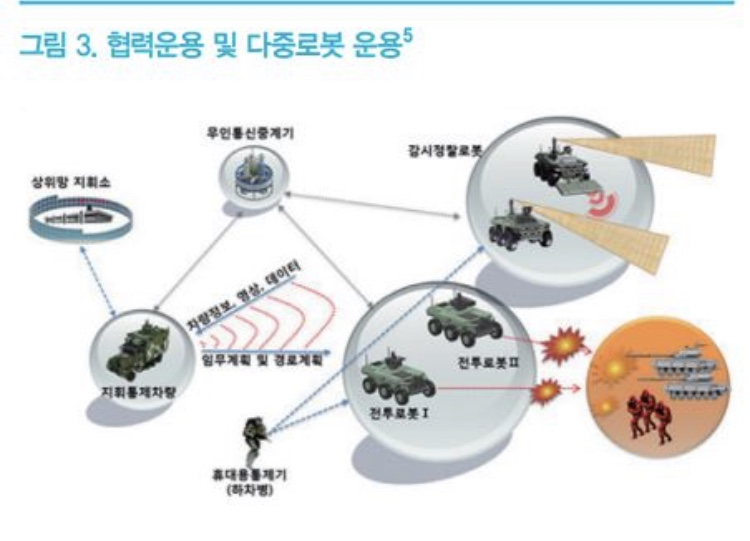
방위산업에서 자율주행은 기동체계를 대폭 끌어올려준다. 기동체계는 군이 차후 작전에 유리한 상황을 조성하기 위해 부대, 물자 또는 화력을 이동시키기 위한 인간, 기계, 재료, 설비, 시설 및 소프트웨어 등에 의해서 구성된 집합을 말한다.
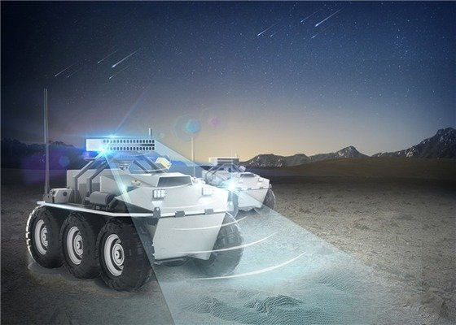
또한 북한의 위협 및 도발 수준은 갈 수록 심해지고 있지만 우리나라는 심각한 저출산으로 인해 병력이 계속 감소하고 이에 따른 운전인력 역시 부족해지는 상황에 처해 있는데 이런 어려움을 자율주행 자동차 적용을 통해 해소할 수 있다.
2. 운•수송 분야
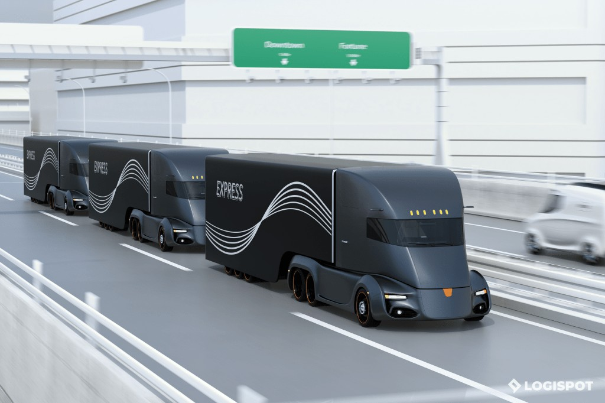
대열주행(일렬로 주행하는 것)의 상용화로 대열의 맨 앞 차량이 뒤 차량들의 공기저항을 줄여 연료사용을 최대 30% 절약 할 수 있다.운전기사가 휴게소에 들를 필요없이 바로 출발지에서 목적지까지 운송할 수있어 과일 채소같은 식품을 운송할때 시간을 단축시켜 신선도를 높게 할수 있다.
2. 의료 분야
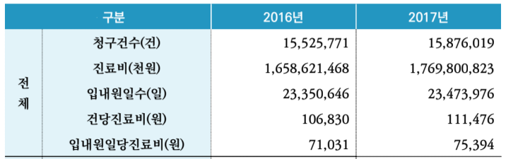
건강보험심사평가원이 공개한 ‘자동차 보험 진료비 통계 자료’에 따르면 2016에서 2017년까지 의료기관에서 교통사고 환자를 치료한 비용은 약 3조 4000억 원이었다. 자율주행자동차의 상용화로 인해 이러한 자동차 사고가 감소하면, 이 진료 비용도 줄어들 것이다.
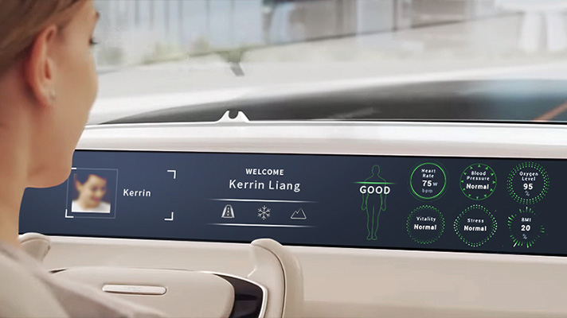
운전자의 생체 신호를 읽고, 이상이 감지되면 병원과 소통하며 응급실까지 자율주행하는 똑똑한 커넥티드카(자율주행차의 한 종류) 또한 상용화될 것이다. 시트나 콘솔에 장착된 접촉식 센서와 실내를 모니터링하는 비접촉식 센서로 탑승자의 혈압이나 심박수와 같은 간단한 건강 체크가 가능하다.
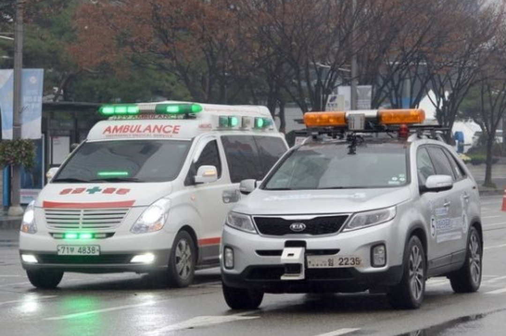
이미 많은 자율주행차에 구급차가 지나가는 길에서는 차선을 양보하는 똑똑한 시스템이 적용되었다. 자율주행차는 여기서 멈추지 않는다. 인간이 가기 힘든 지역에 보급품을 전달하고, 필요하다면 부상자 이송도 가능하다. 격리와 이송 등, 감염 문제 때문에 인력을 투입하기 어려운 신종 인플루엔자 발생 사태에서도 유용하게 쓰일 것이다.
1. 방위 산업 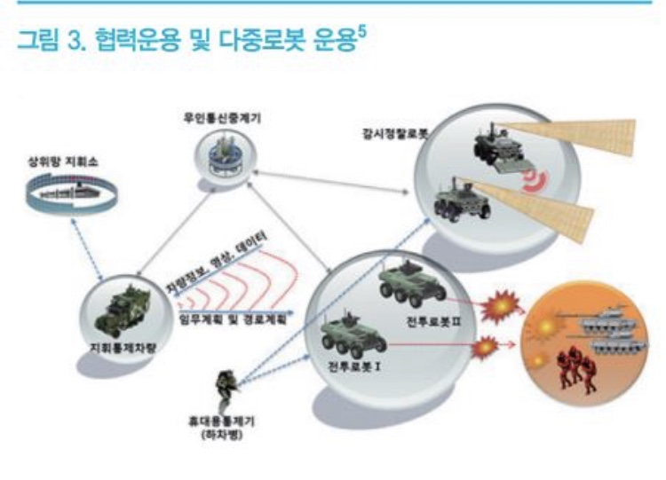
방위산업에서 자율주행은 기동체계를 대폭 끌어올려준다. 기동체계는 군이 차후 작전에 유리한 상황을 조성하기 위해 부대, 물자 또는 화력을 이동시키기 위한 인간, 기계, 재료, 설비, 시설 및 소프트웨어 등에 의해서 구성된 집합을 말한다.
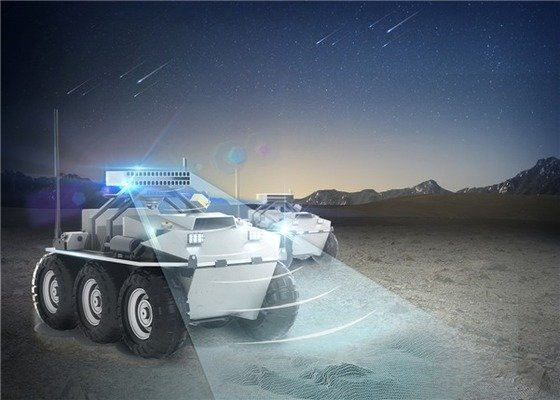또한 북한의 위협 및 도발 수준은 갈 수록 심해지고 있지만 우리나라는 심각한 저출산으로 인해 병력이 계속 감소하고 이에 따른 운전인력 역시 부족해지는 상황에 처해 있는데 이런 어려움을 자율주행 자동차 적용을 통해 해소할 수 있다.
2. 운•수송 분야 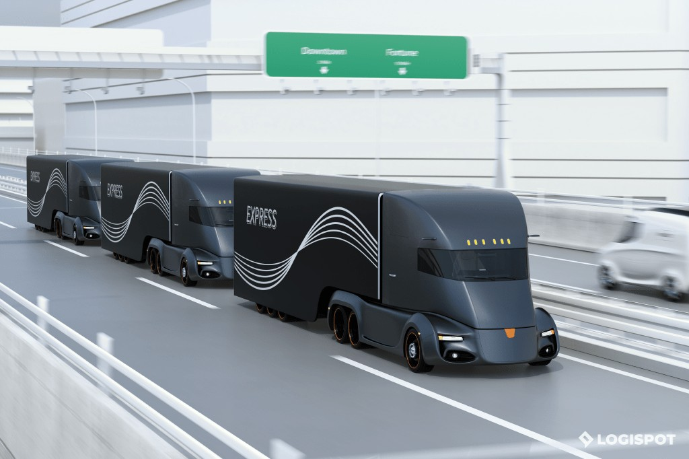
대열주행(일렬로 주행하는 것)의 상용화로 대열의 맨 앞 차량이 뒤 차량들의 공기저항을 줄여 연료사용을 최대 30% 절약 할 수 있다.운전기사가 휴게소에 들를 필요없이 바로 출발지에서 목적지까지 운송할 수있어 과일 채소같은 식품을 운송할때 시간을 단축시켜 신선도를 높게 할수 있다.
2. 의료 분야 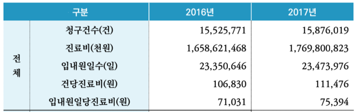
건강보험심사평가원이 공개한 ‘자동차 보험 진료비 통계 자료’에 따르면 2016에서 2017년까지 의료기관에서 교통사고 환자를 치료한 비용은 약 3조 4000억 원이었다. 자율주행자동차의 상용화로 인해 이러한 자동차 사고가 감소하면, 이 진료 비용도 줄어들 것이다.
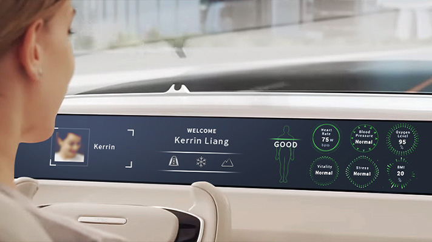운전자의 생체 신호를 읽고, 이상이 감지되면 병원과 소통하며 응급실까지 자율주행하는 똑똑한 커넥티드카(자율주행차의 한 종류) 또한 상용화될 것이다. 시트나 콘솔에 장착된 접촉식 센서와 실내를 모니터링하는 비접촉식 센서로 탑승자의 혈압이나 심박수와 같은 간단한 건강 체크가 가능하다.
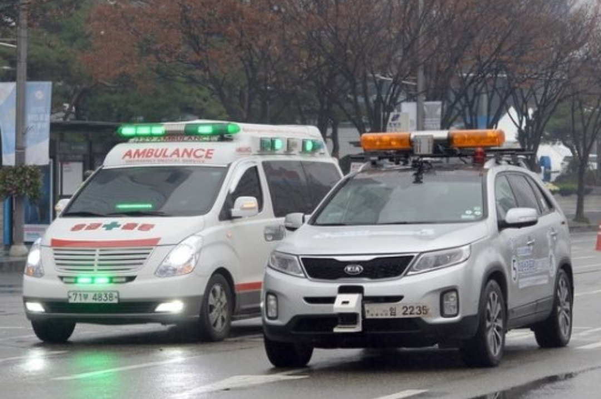이미 많은 자율주행차에 구급차가 지나가는 길에서는 차선을 양보하는 똑똑한 시스템이 적용되었다. 자율주행차는 여기서 멈추지 않는다. 인간이 가기 힘든 지역에 보급품을 전달하고, 필요하다면 부상자 이송도 가능하다. 격리와 이송 등, 감염 문제 때문에 인력을 투입하기 어려운 신종 인플루엔자 발생 사태에서도 유용하게 쓰일 것이다.
Contact us to get started
We'll reply when we get back from fishing.